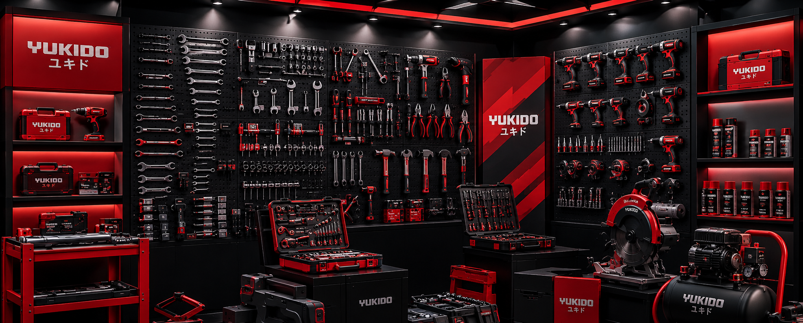
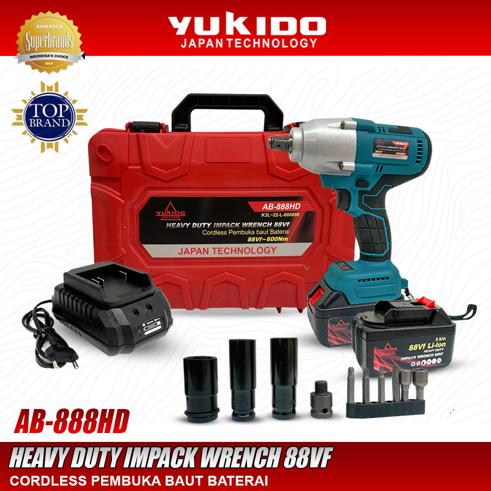

PRODUK POPULER

TERLARIS AB8-600FWYUKIDO CORDLESS IMPACT WRENCH 600Nm
Mesin pembuka baut tanpa kabel dengan torsi maksimal 600 Nm, cocok untuk membantu pekerjaan otomotif dan perbengkelan.
KENALI PRODUK YUKIDO LEBIH DEKAT
Temukan informasi produk, cara penggunaan, dan keunggulan peralatan Yukido melalui video TikTok berikut.
Kenali Produk Unggulan Yukido
Kenali fitur dan keunggulan produk Yukido untuk menunjang pekerjaan Anda.
TONTON DI TIKTOKTutorial Penggunaan Peralatan
Pelajari cara menggunakan peralatan Yukido dengan tepat dan efektif.
TONTON DI TIKTOKDemonstrasi Performa Produk
Lihat performa dan kemampuan produk Yukido saat digunakan.
TONTON DI TIKTOKTips Perawatan Peralatan
Dapatkan tips perawatan untuk menjaga performa dan usia pakai alat.
TONTON DI TIKTOKSTANDAR BENGKEL PROFESIONAL
Perkakas heavy-duty andalan mekanik untuk segala kebutuhan perbaikan dan industri.
DARI UJI COBA EKSTRIM SIRKUIT KE KINERJA PROFESIONAL
Perkakas dan komponen YUKIDO bukan sekadar alat biasa. Setiap produk lahir dari tempaan ketat di sirkuit balap nasional untuk menguji daya tahan material di bawah tekanan maksimal.
Ketahanan di Bawah Tekanan Ekstrim
Teruji konsisten menahan gesekan, panas tinggi, dan beban kerja berat tanpa mengalami penurunan performa sedikit pun.
Standar Kualitas Juara
Mengusung presisi tingkat tinggi yang sama seperti yang diandalkan oleh tim balap profesional kelas kejuaraan.
PT YUKIDO POWER TEKNIK
Layanan pemasangan mekanik profesional, dyno test tuning, dan pembelian part langsung dengan inspeksi visual.